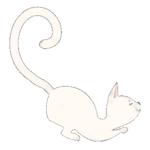

<p>
  <mat-toolbar color="primary">
    
    <span class="menu-items-spacer"></span>
    <span>Kitties Mini App</span>
    <span class="menu-spacer"></span>
    <button
      mat-flat-button
      color="primary"
      aria-label="Home menu button">
      Home
    </button>
    <button
      mat-flat-button
      color="primary"
      aria-label="Login menu button">
      Login
    </button>
    <button
      mat-flat-button
      color="primary"
      aria-label="About menu button">
      About
    </button>
  </mat-toolbar>
</p>
